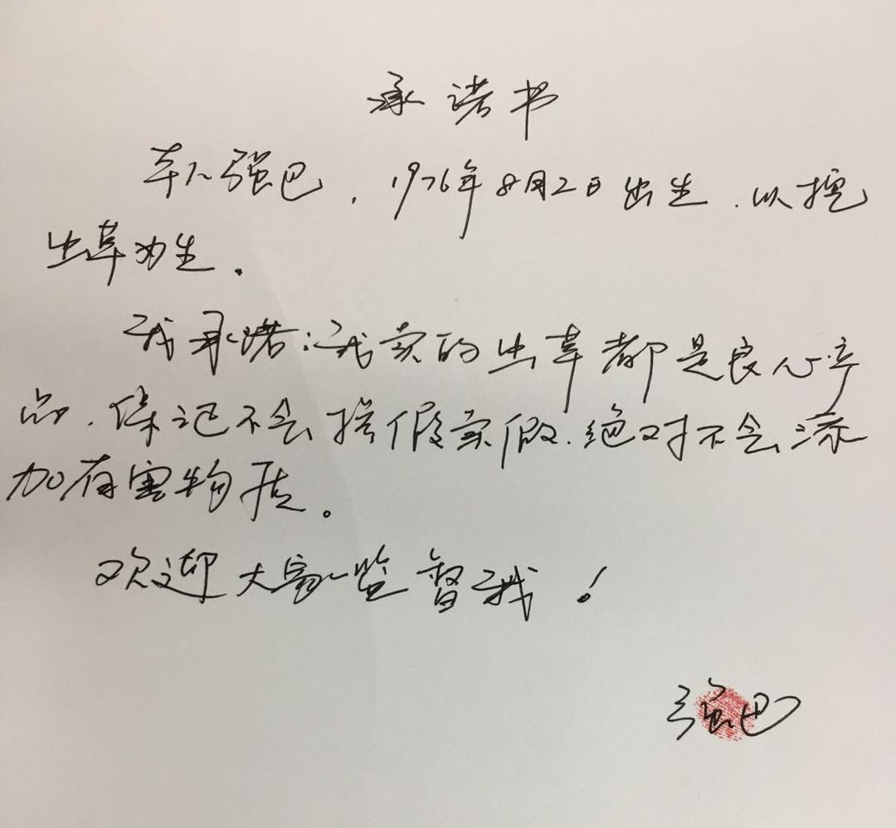

- 想全面了解虫草
- 长按复制下方 ↓ ↓ ↓ 微信号
- 微信号: gdt556 ( ← 长按可复制 )
- 西藏那曲资深虫草师
- 免费帮你鉴别虫草真假
- 教你如何买到正宗好虫草
- 教你虫草怎么吃省钱有功效
每天加微信的前10名 免费领取价值3000元虫草礼品1份
大家好！我叫强巴，西藏那曲资深虫草人及品鉴师。家里三代行医，从小与中药相伴，8年前有缘来到西藏那曲，接触到纯正野生的冬虫夏草，本着将那曲野生冬虫夏草带给有需要人的愿心，开启西藏那曲虫草搬运工的人生。
为了能让广大的朋友能够更好的去辨别虫草的真假以及更深入的了解虫草的知识和功效，以此文章分享给大家，希望广大朋友能够转发、收藏，让更多的人了解到虫草 ↓ ↓ ↓
- 想知道更多关于虫草的知识及相关推文
- 可长按复制 ↓ ↓ ↓ 微信号
- 我的微信号: gdt556 ( ← 长按可复制 )
- 西藏那曲资深虫草师
- 专业为您解答虫草知识
- 定期分享虫草最有效的吃法

虫草主要产地有：西藏、青海、四川。不同产地的虫草营养价值不同。从大方面讲，青海产量第一，但最好的虫草在西藏那曲，那曲虫草被誉为“黄金草”，国家地理标志保护产品。连续数年蝉联虫草冠军宝座，优良的品质获得世界的认可。
不同产地的虫草营养价值大不同。产地越高、产期越晚，营养价值越高。
↓ ↓ ↓
我们那曲虫草生长在青藏高原之巅的羌塘草原海拔4500-6000米，属于特殊的高原性和大陆复合性气候系统。碱性土壤中矿物质、微量元素含量丰富，昼夜温差大，日照充足，加上适宜的空气湿度，使得这里出产的冬虫夏草以色正、体满、营养价值高闻名于世。
独特的土壤条件加上独有的气候条件，使得这里的虫草 草色泽黄净 ， 虫体肥大 ， 营养价值高 ，还有股 浓酥油的香味 。
温馨提示：
1.每天加微信的前10名 免费领取价值 3000 元虫草礼品1份
2.想要了解更多虫草知识和更多优惠活动，请长按复制微信号添加好友，更多优惠等着你 ↓ ↓ ↓
- 想知道更多关于虫草的知识及相关推文
- 可长按复制 ↓ ↓ ↓ 微信号
- 我的微信号: gdt556 ( ← 长按可复制 )
- 西藏那曲资深虫草师
- 专业为您解答虫草知识
- 定期分享虫草最有效的吃法
五月初旬，当冰雪开始融化时，便是那曲虫草采收之时，藏民们会停掉手头所有的活计, 拎着镢头进山，在海拔4500米以上的高山营地挖虫草。
每一根虫草都来之不易，只为将虫草带给有需要的人，而这些辛苦就值得了！
↓ ↓ ↓
虫草不好找，它都是只冒出小尖尖，跟周围的杂草泥土颜色差不多，需要 弯腰 或 趴着 、 跪着 ，在地上一点点前进找虫草，一天下来 脚又酸又麻 ，真的很累，藏民腿部 风湿问题 特别普遍，就是因为长期趴着跪着找虫草，如果是没有 多年经验 的新手，根本发现不了。
- 想在挖草季体验挖虫草乐趣的朋友
- 可长按复制 ↓ ↓ ↓ 微信号
- 我的微信号: gdt556 ( ← 长按可复制 )
- 西藏那曲资深虫草师
- 带你体验挖虫草的乐趣
- 发现更多虫草的价值功效
冬虫夏草是动物和植物的完美结合，又是“中药之王”，只有虫没有草，不是冬虫夏草，只有草没有虫，也不是冬虫夏草。
天赐好礼,中药之王
↓ ↓ ↓
冬虫夏草的形成，通俗的说就是虫草，由 蝙蝠蛾 在土壤中 产卵 ，孵化为 幼虫 之后，冬虫夏草菌种侵入幼虫体内，吸收幼虫体内的营养，并在幼虫体内不断繁殖，致使幼虫体内充满菌丝，在来年的5－7月，从幼虫头部长出 黄色或浅褐色的菌座 ，生长后冒出地面呈草梗状，就形成我们平时见到的 冬虫夏草 。
温馨提示：
1.每天加微信的前10名 免费领取价值 3000 元虫草礼品1份
2.想要了解更多虫草知识和更多优惠活动，请长按复制微信号添加好友，更多优惠等着你 ↓ ↓ ↓
- 西藏那曲资深虫草师
- 8年只专注一件事
- 除了每天更新冬虫夏草文章
- 还会奉上购选虫草、吃法全攻略
- 可长按复制 ↓ ↓ ↓ 微信号
- 我的微信号: gdt556 ( ← 长按可复制 )
多年来我们的每一根虫草都来自西藏那曲高海拔区域，从那曲当地藏民手中直接收购， 把价格压缩到市场价的50%， 层层筛选，严选品质,每一根都由我精心挑选，绝无掺杂其他产地品种或次级虫草，保证所有冬虫夏草「 地道纯正 」，不忘初心，只为将营养价值最好的西藏那曲虫草带给客户,极力造福更多人。我们尽全力让虫草远离“天价”的标签，但要很便宜，绝对没办法。
每一根都是藏民辛苦采挖 ， 直接采收 ， 没有任何中间环节
↓ ↓ ↓

我们的每一根虫草都是藏民们辛苦挖来的，他们需要 弯腰 或 趴着 、 跪着 ，在地上一点点前进找虫草，一天下来也就挖 二十根左右 ，经验不足的人有时一天下来都找不到十根。好虫草是 越来越少 了；而且找一天虫草下来 脚又酸又麻 ，常年下来，藏民们都会有不同程度的 风湿 问题。
冬虫夏草乃 “中药之王” ，具有非常高的食疗功效，对人体起到全面的保健作用，虫草越好营养成分就越高，顶级的那曲虫草， 一根顶普通虫草六根 。
如有需要的朋友可以加我微信，更多优惠价格等你来拿
我们承诺，每一根虫草都是西藏高海拔的野生虫草，从西藏源头 直接采摘收购 ，每一根都是经过 精心挑选 的，无掺杂其他产地品种或次级虫草,如有假货，全额退款！
据我所知，在西藏像我们这样直接源头收购的，没有几家！
- 如何辨别虫草真假
- 西藏那曲资深虫草师为您辨真假
- 可长按复制 ↓ ↓ ↓ 微信号
- 我的微信号: gdt556 ( ← 长按可复制 )
- 帮您免费鉴别虫草
- 让您更省心
不同人，不同情况需要不同的吃法。我的朋友圈每周定期都会分享很多营养食谱，朋友们看了都有好评反馈，效果很有针对性，可以加我微信详细观看，我的朋友圈都是无偿开放的。
正确吃法，吃出功效
↓ ↓ ↓
磨粉泡水
方法：每天取一定量虫草研末，用温水或淡盐水空腹送服，日服两到三次。
炖汤
方法：可以与乌鸡、老鸭、甲鱼等一起炖汤，一次放3-7根虫草。
泡酒
方法：选用优质的白酒，一斤酒泡5-10克虫草，泡五天以上就可以饮用。
温馨提示：
1.每天加微信的前10名 免费领取价值 3000 元虫草礼品1份
2.想要了解更多虫草知识和更多优惠活动，请长按复制微信号添加好友，更多优惠等着你 ↓ ↓ ↓
- 我的朋友圈
- 每周都会定期分享 专业的虫草食谱
- 教你事半功倍地吃出虫草的效果
- 吃出虫草的花样美味
- 我是西藏那曲资深虫草师
- 可长按复制 ↓ ↓ ↓ 微信号
- 我的微信号: gdt556 ( ← 长按可复制 )
虫草产地不同，品质不同，价格不同。在通常人们所能认识到的冬虫夏草中，西藏那曲冬虫夏草是最好的虫草，产地海拔、品质和品象都是最佳的。
挑选优质虫草，让您食得放心
↓ ↓ ↓
观：八对足、头部颜色浅、消化腺、缺一不可
尝：细嚼甘甜中路带一咸，吃完口中留有余香
嗅：稍带有虫体的腥燥味及掺杂着草菇的香气
一级虫草（2根/克）
营养价值最高，适合送礼和经济条件好的朋友日常保健。
二级虫草（3根/克）
品相好、品质高，性价比更高，适合大多数顾客日常使用及送礼需求。
三级虫草（4根/克）
品相与饱满度相对一二级草略低，自吃性价比最高，适合家庭长期保健食用。
想要了解更多的详细内容和虫草鉴别方法，可添加下方微信进行咨询 ↓ ↓ ↓
- 西藏那曲资深虫草师
- 定期直播讲解虫草相关知识
- 教你如何辨别虫草品质优劣
- 可长按复制 ↓ ↓ ↓ 微信号
- 我的微信号: gdt556 ( ← 长按可复制 )
我们承诺，每一根虫草都是西藏高海拔的野生虫草，从西藏源头 直接采摘收购 ，每一根都是经过 精心挑选 的，无掺杂其他产地品种或次级虫草,如有假货，全额退款！
添加微信号: gdt556 ( ← 长按可复制 )，确认购买信息。
24小时内发货，全国包邮。
在收到货后如有任何不满意，我们支持无理由退换货；不满意:退 / 不喜欢:退 / 不想要:退 / 品相不好:退
添加微信，如有什么问题，我们都可以为您解答！
凡是在我们这购买过的，将成为我们的VIP会员，享受活动优惠价,如有优惠活动，我们将会第一时间通知您。

温馨提示：
1.每天加微信的前10名 免费领取价值 3000 元虫草礼品1份
2.想要了解更多虫草知识和更多优惠活动，请长按复制微信号添加好友，更多优惠等着你 ↓ ↓ ↓
- 我们认真对待每一位客户
- 实拍发货过程给客户
- 严格把关产品质量
- 为每一位有需要的人保驾护航
- 我是西藏那曲资深虫草师
- 可长按复制 ↓ ↓ ↓ 微信号
- 我的微信号: gdt556 ( ← 长按可复制 )
如果您在虫草方面，有任何需要了解的问题，可以第一时间找我为您解答，期待您的提问。同时，我希望大家都能学会如何去辨别虫草优劣，劣质虫草 伤钱伤身 ，抵制劣质虫草，从我做起，恳请大家监督：

热门评论
周大叔
2018-08-27
虫草不错，吃了几个月感觉身体好多了。
推荐 452 / 回复
世事无常
2018-08-27
上一年有了胃癌，化疗后身体都虚弱了很多，用了你家虫草吃了3个月，感觉精神好多了。
作者：谢谢您对我家虫草的支持，冬虫夏草具有抗癌的效果，而且对于术后/化疗的病人有着不错的滋补作用呢！
推荐 865 / 回复
我有我家宝宝
2018-08-27
老公身体差，肾不好，经常尿不停。悄悄给他买了50克来吃，现在身体比以前好多了
作者：草的功效有很多，主要有防癌抗癌，抗肿瘤，调节肝，肺，心脏，呼吸系统，免疫系统和造血功能，提高细胞能量，缓解疲劳，改善睡眠，降三高，补肾壮阳等都有明显的效果哦。
推荐 821 / 回复
Elaine
2018-08-27
去药监局检验，是真的虫草，一直以为网上的不靠谱，没想到你们家那么好，下次再来购买
作者：我们的虫草一直都是发源地收草，给到每一个顾客手上的虫草都是经过精挑细选的呢。
推荐 821 / 回复
杰鑫
2018-08-27
买了200克虫草去见岳父，岳父看到虫草后笑得可开心了，看来高档滋补品送礼一流啊。
推荐 1221 / 回复
风平浪静
2018-08-27
这家的虫草质量真的很不错，我之前也在别家买过，但是性价比是这家最高的，还会继续购买的
作者：嗯嗯，感谢您的支持，我们只做精品不做通货哦！
推荐 350 / 回复
流金岁月
2018-08-27
为了生意，不得不经常应酬、熬夜，导致肝脏出现问题，自从在楼主这里买了虫草，一直坚持吃到现在，虽然熬夜、应酬还是免不了，但是身体一直很好，感谢虫草，感谢楼主
作者：工作在忙也要注意好身体，除了要定期进补以外，饮食作息也要多多注意哦！
推荐 916 / 回复
敷衍不如拒绝
2018-08-27
老人家身体不太好，特别是生病后，特别虚弱，作为女儿我非常心疼，对比了多家虫草商家以后，还是选择在强巴大哥这里买，虫草果然没让我失望，非常赞！
作者：看到我们家的虫草可以帮到你们真的是太开心了，扎西德勒。
推荐 683 / 回复
拈花惹草
2018-08-27
其实这个我也不懂，但是对比之前淘宝上买好像要好些，我老公也说不错，就是价格高了一点
作者：好的虫草都是不便宜呢，我们除了在原产地收草以外，还要经过2轮的挑选，无论是质量还是效果都是有保证的，希望您吃好了可以继续订购哦。
推荐 663 / 回复
Jansoo
2018-08-27
买来送老婆的，虫子纹路很清晰，包装也不错，但是老婆不敢吃，没办法
推荐 593 / 回复
无忌
2018-08-27
以前应酬多了，身体也一天不如一天，总感觉很累，后来朋友推荐你家虫草，感觉效果还是可以的
推荐 1593 / 回复
Demo
2018-08-27
终于等到楼主发帖分享啦，顶一个！！我们家一直比较注重健康养身，吃楼主家的野生虫草2年了，滋补效果很好，家里老人身体好了很多！良心卖家，赞赞赞！
推荐 975 / 回复
海
2018-08-27
刚加了微信，长知识！虽然还没买虫草，可是跟店家咨询了很多关于虫草的知识，店家人很好，很有耐心，强烈推荐需要虫草的朋友加他微信。
推荐 1209 / 回复
暗夜
2018-08-27
懂行的朋友说是真品，这个价格很划算
推荐 695 / 回复
漫漫
2018-08-27
爸爸的身体不太好，买回去送给爸爸，希望他用了对身体有好处。。。
推荐 756 / 回复
往事如风
2018-08-27
经常吃虫草，所以对虫草的品质很挑剔，一般认准了一家就不会换的,你家的诚信跟品质一直都保持得很好，价格也算比较实惠，性价比也高，包装很用心，有需要的朋友可以放心购买
推荐 1005 / 回复
人生如戏
2018-08-27
虫草大小均匀，是正品，干净饱满，口感很好，有菌菇味，价格实惠很划算，卖家服务很划算
推荐 293 / 回复
syh
2018-08-27
之前晚上一直失眠，用了这个后就再也没有了，睡得很踏实，失眠的朋友可以试下。
推荐 857 / 回复
华少
2018-08-27
这家的虫草确实不错，大小均匀，饱满圆润，气味正宗，再次感谢朋友圈全面的真假辨别反馈，野生虫草已收到
推荐 703 / 回复
以拉到最低了呦 ↑ ↑ ↑